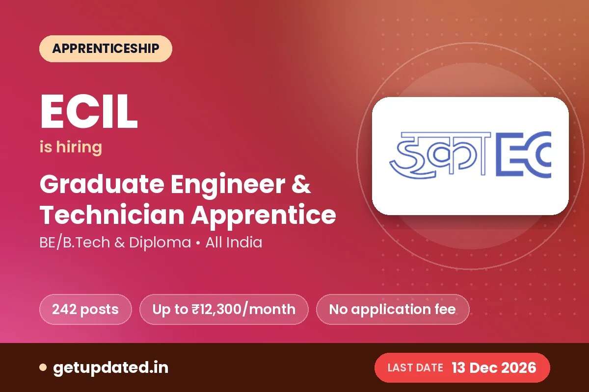
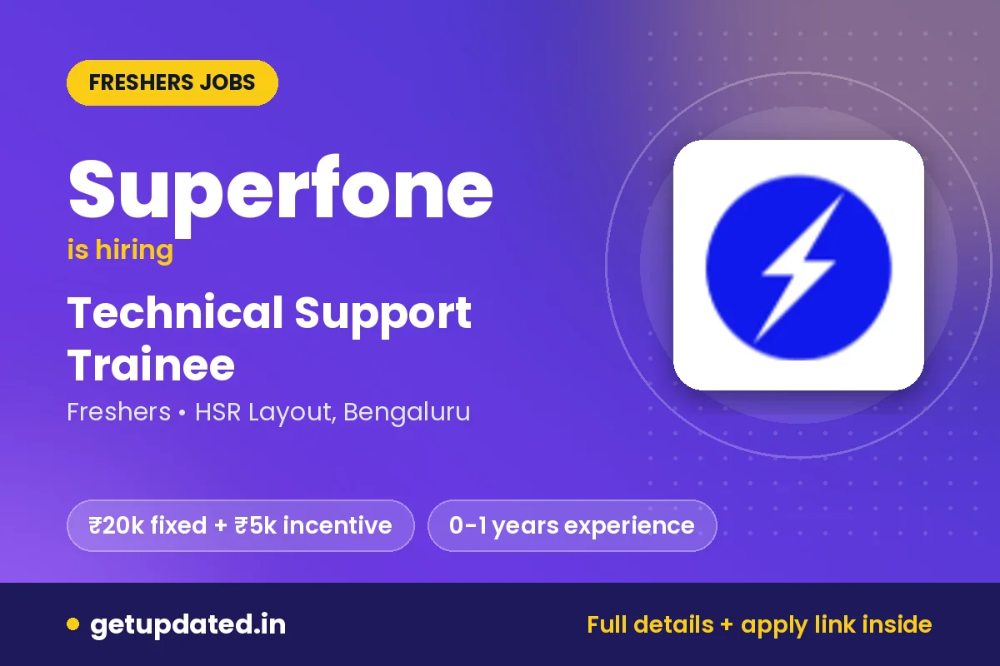

The Karnataka Examinations Authority (KEA) has opened one of the largest clerical recruitments of the year. KEA FDA SDA Recruitment 2026 covers 5,431 posts in various Karnataka government departments, boards and corporations. Posts are split between the Residual Parent Cadre (RPC) and the Kalyana Karnataka (KK) cadre.
There are 2,726 degree-level (FDA) posts and 2,705 PUC-level (SDA) posts, so both Second PUC pass candidates and graduates can apply. The notification was released on 29 October 2026 and online applications opened on 30 October 2026.
Important update: the last date to apply has been extended to 30 November 2026 (earlier 25 November 2026). The fee payment deadline is still 26 November 2026, so do not leave it to the last day.
5,431 posts, PUC and degree holders eligible, apply online by 30 November 2026.
Table of Contents
- Quick Highlights
- About the Recruiting Body
- Vacancy Details
- Eligibility Criteria
- Important Dates
- Salary and Application Fee
- Selection Process
- How to Apply
- Preparation Plan
- Common Mistakes to Avoid
- Official Links and Final Checklist
- Final Takeaway
- Also Read
- FAQs
Quick Highlights
| Particular | Details |
|---|---|
| Organisation | Karnataka Examinations Authority (KEA) |
| Posts | First Division Assistant (FDA), Second Division Assistant (SDA) and other departmental posts |
| Total vacancies | 5,431 |
| Qualification | Second PUC (SDA), graduation (FDA) |
| Age limit | 18 years minimum; category-wise upper limit 40-45 years |
| Application mode | Online |
| Last date to apply | 30 November 2026 |
| Fee payment last date | 26 November 2026 |
| Job location | Karnataka |
| Selection | Written exam, Kannada language test, document verification |
About the Recruiting Body
The Karnataka Examinations Authority conducts common entrance tests such as UGCET, DCET and PGCET, and also runs recruitment exams for several Karnataka government departments. Its portal at cetonline.karnataka.gov.in/kea/ lists live recruitment links, including a Group-C FDA and SDA recruitment for RPC and KK 2026.
FDA and SDA are clerical and assistant-level posts that form the backbone of government offices. Holding one means a stable state government career, with scope for departmental promotions over time. Because the posts are spread across many departments, boards and corporations, the final posting depends on your rank, reservation category and preferences.
Vacancy Details
KEA has released four separate notifications, one each for RPC FDA, RPC SDA, KK FDA and KK SDA.
| Notification | Cadre | Vacancies |
|---|---|---|
| FDA (degree-level) | Residual Parent Cadre (RPC) | 2,163 |
| SDA (PUC-level) | Residual Parent Cadre (RPC) | 2,070 |
| FDA (degree-level) | Kalyana Karnataka (KK) | 563 |
| SDA (PUC-level) | Kalyana Karnataka (KK) | 635 |
| Total | 5,431 |
By qualification level, there are 2,726 degree-level posts and 2,705 PUC-level posts. Department-wise, post-wise and reservation details are given separately in each notification, so open the PDF for the cadre you are applying to and check the exact allocation.
RPC or KK?
Kalyana Karnataka posts are meant for candidates meeting the regional eligibility and certificate requirements. If you plan to use KK reservation provisions, keep the required certificate ready before you start the form.

Eligibility Criteria
The requirements differ between the PUC-level and degree-level posts. Certain specialised posts also need specific subjects or degrees.
| Post category | Educational qualification |
|---|---|
| SDA / PUC-level | Second PUC or equivalent recognised under the recruitment rules. Some departmental posts may need specific subjects, including Commerce with Accountancy. |
| FDA / Degree-level | Graduation from a recognised university. Some posts need B.Com, BBA, BBM, engineering, computer-related or other specified qualifications. |
- Education: you must hold the qualification prescribed for the post you choose.
- Specialised posts: you need the relevant subject-specific qualification.
- KK candidates: you must meet the regional eligibility and produce the prescribed certificates.
- Equivalent qualifications: accepted only when the recruitment rules permit.
- Age: 18 years minimum, with a category-wise upper limit between 40 and 45 years.
The job-site text lists no mandatory work experience for these posts, which makes this a good opportunity for freshers. Still, confirm the exact post-wise conditions and age relaxations in the official notification before you pay the fee.
Important Dates
| Event | Date |
|---|---|
| Notification release | 29 October 2026 |
| Online application start | 30 October 2026 |
| Last date to pay fee | 26 November 2026 |
| Last date to apply online | 30 November 2026 |
| Kannada language test | 8 January 2027 |
| KK FDA examination | 9 January 2027 |
| RPC FDA examination | 10 January 2027 |
| KK SDA examination | 16 January 2027 |
| RPC SDA examination | 17 January 2027 |
Fee deadline is earlier
The fee payment closes on 26 November 2026, before the application deadline of 30 November 2026. Pay early so that your application is not left incomplete.
Dates can change, so keep checking the KEA website for admission tickets and any revised schedule.
Salary and Application Fee
The exact pay scale and application fee are not given in the text available for this article. Pay scales depend on the post, and the amounts are in the official notifications. Check the salary and fee for your category (General, OBC, SC/ST and others) in the PDF before applying.
Selection Process
Selection has three stages:
- Written examination: the competitive exam for FDA or SDA, held on the dates above.
- Kannada language test: the applicable Kannada language requirement, scheduled for 8 January 2027.
- Document verification: candidates who qualify must show original certificates for education, category, age and, where applicable, KK reservation.
The Kannada test is a qualifying hurdle in Karnataka government recruitment, so do not ignore it. Candidates who studied Kannada at school will find it easier. Others should start practising reading and writing early.
How to Apply
- Open the application page at cetonline.karnataka.gov.in/kea/gpcfdasdarpc2026 (Apply Online link in the Official Links section below).
- On that page, choose Group-C FDA & SDA, Various Department posts for RPC and KK 2026 and start your application.
- Read the notification for your cadre (RPC or KK) and post type (FDA or SDA).
- Register and fill in personal, educational and category details accurately.
- Upload the required documents and photo as per the instructions.
- Pay the application fee on or before 26 November 2026.
- Submit before 30 November 2026 and save a copy of the confirmation.
Keep documents ready
Keep your PUC or degree marks cards, caste or income certificates (if applicable), KK certificate (if applicable) and a recent photograph in the right format before you begin. It saves time and avoids mistakes.
Preparation Plan
Specific syllabus and exam pattern details are in the notification and on the KEA site, so first download them. A sensible plan for about six weeks before the January 2027 exams:
- Weeks 1-2: go through the syllabus, collect previous Karnataka clerical papers, and fix a daily study routine.
- Weeks 3-4: cover general knowledge, current affairs, Karnataka history, geography and administration, and basic mathematics and reasoning.
- Weeks 5-6: take timed mock tests, revise weak topics, and practise Kannada.
Since FDA and SDA exams are on different dates, you can apply to both if you meet both qualifications, but check the rules in the notification first. Degree holders are usually allowed to apply for PUC-level posts only if the notification permits it.
Common Mistakes to Avoid
- Waiting until the final day, when the portal may slow down.
- Missing the earlier fee payment date of 26 November.
- Choosing the wrong cadre (RPC vs KK) or the wrong post type.
- Entering details that do not match your certificates.
- Ignoring the Kannada language test.
- Relying only on aggregator sites instead of the official notifications.
Check before submitting
You usually cannot edit a form after final submission. Verify your name, date of birth, category and qualification details before you pay.
Official Links and Final Checklist
- Apply Online (KEA FDA/SDA 2026)
- RPC FDA Notification (PDF)
- RPC SDA Notification (PDF)
- KK FDA Notification (PDF)
- KK SDA Notification (PDF)
- Last Date Extension Notice (Kannada, PDF)
Final checklist:
- Confirm your qualification matches the post.
- Pay the fee by 26 November 2026.
- Submit the application by 30 November 2026.
- Save the confirmation and fee receipt.
- Note the exam dates and start Kannada practice.
Final Takeaway
KEA FDA SDA Recruitment 2026 is a rare chance for Second PUC pass candidates and graduates to enter Karnataka government service, with 5,431 posts across the state. The deadline is close, and the fee payment date comes even earlier. Read the notification for your cadre, apply on the official portal, and use the time before the January 2027 exams for focused preparation.
Also Read

PhonePe Hiring Platform Engineer 1 in Bengaluru 2026: Any Graduate, 0-2 Years Experience
Read now →
ECIL Recruitment 2026: Apply Online for 242 Graduate Engineer and Technician Apprentice Posts
Read now →
Superfone Hiring Technical Support Trainee in Bengaluru: Freshers Can Apply (2026)
Read now →
Accenture Hiring Application Tech Support Practitioner in Bengaluru (0-2 Years, Freshers Can Apply)
Read now →Browse all latest jobs & updates →
FAQs
1. How many posts are there in KEA FDA SDA Recruitment 2026?
There are 5,431 posts: 2,163 RPC FDA, 2,070 RPC SDA, 563 KK FDA and 635 KK SDA.
2. What is the last date to apply?
The last date to apply online is 30 November 2026, extended from 25 November 2026. The fee payment last date is 26 November 2026.
3. What qualification is needed for SDA?
SDA (PUC-level) posts need Second PUC or an equivalent qualification. Certain departmental posts may need specific subjects such as Commerce with Accountancy.
4. What qualification is needed for FDA?
FDA (degree-level) posts need a graduation from a recognised university. Some posts need B.Com, BBA, BBM, engineering, computer-related or other specified degrees.
5. What is the age limit?
The minimum age is 18 years and the category-wise upper age limit is 40 to 45 years. Check the notification for exact relaxations.
6. What is the selection process?
Selection involves a written examination, an applicable Kannada language test and document verification.
7. When are the exams?
The Kannada language test is on 8 January 2027. FDA exams are on 9 January (KK) and 10 January (RPC), and SDA exams on 16 January (KK) and 17 January (RPC) 2027.
8. Where do I apply?
Apply online on the KEA recruitment portal at cetonline.karnataka.gov.in/kea/ under the Group-C FDA & SDA recruitment for RPC and KK 2026.